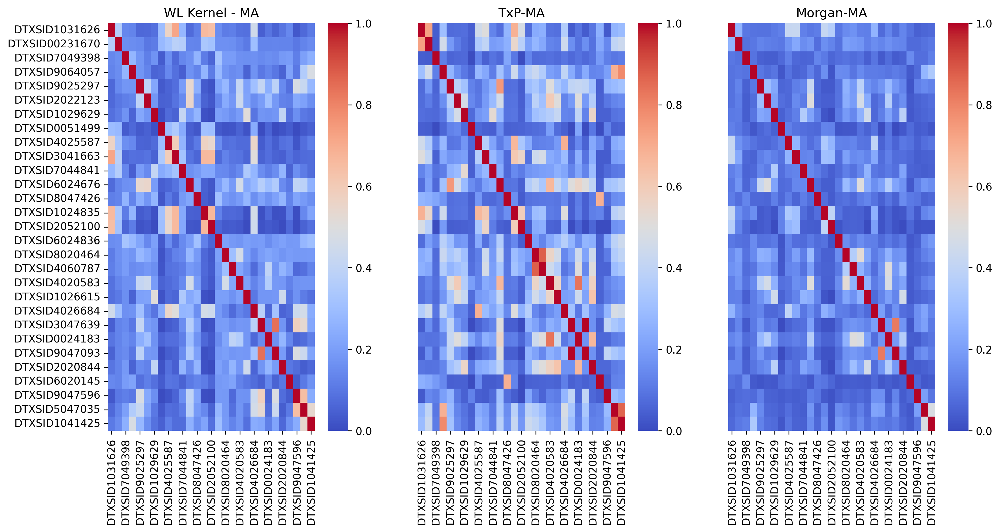

Can graph similarity metrics be helpful for analogue identification as part of a read-across approach?
Read-across is a technique used to fill data gaps for substances lacking specific hazard data. The technique relies on identifying source analogues with relevant data that are ‘similar’ to the substance of interest (the target). Typically, source analogues are identified on the basis of structural similarity but the evaluation of their suitability for read-across depends on other contexts of similarity including their physical property information, chemical reactivity, bioactivity and metabolism. Whilst quantifying structural similarity is well established, often relying on chemical fingerprints and using a similarity index such as Tanimoto to limit the number of analogues returned, characterising other aspects of similarity objectively remains a challenge. Many different aspects of a substance and its associated properties lend themselves to being represented by graphs which offers alternative means by which analogues could be potentially identified and evaluated for read-across purposes. This manuscript considered at least three such methods; graph kernel, graph embedding, and deep learning (DL) approaches and explored their utility for analogue identification using 5 datasets of varying size and diversity. Comparisons were made using two chemical fingerprint approaches, ToxPrints and Morgan fingerprints.
Read-Across, Graph similarity, Graph kernels, Graph convolutional networks (GCNs)
Introduction
Background to Read-Across
There are tens of thousands of substances that exist in active commerce e.g. the US Toxic Substances Control Act (TSCA) comprises ~42,000 substances, of which only a small proportion have undergone sufficient toxicological evaluation. In a recent EPA report (USEPA 2024), only 15% of substances in US commerce had been subjected to any of the standard toxicity tests used to characterise human health that assessing each chemical would present a significant and impractical challenge in terms of cost, animal welfare, and resources (NRC 1984). In vitro and in silico approaches have the potential to play a large role in prioritising which chemicals to focus on in the absence of conventional toxicity data. In silico approaches encompass (quantitative) structure-activity relationships ((Q)SAR) as well as read-across, both of which relate chemical structure to (eco)toxicological or physical property endpoints. QSARs are often used to address gaps for environmental fate, ecotoxicological and physical property endpoints whereas read-across is most commonly used for human health related endpoints. To illustrate its significance for regulatory purposes, read-across is cited as the most commonly used adaptation to address information requirements under the European Union’s Registration Evaluation and Authorisation of Chemicals (REACH) regulation (Commission 2006; Macmillan et al. 2024).
In brief, read-across describes the method for filling a data gap whereby a substance with existing data (termed the ‘source analogue’) is used to make a prediction of the same property for a ‘target’ substance with limited available empirical data. The approach relies on the premise that both source and target substances are ‘similar’ in some context with relevant information pertaining to a specific outcome (Enoch 2010; OECD 2014). Key to this approach is the characterisation of similarity. Although structural similarity is the most common approach used to identify candidate source analogues, other similarity contexts such as similarity in physicochemical properties, metabolism, chemical reactivity, bioactivity and toxicological profile also play a significant role in justifying the relevance and suitability of those source analogues for read-across. For example, metabolic similarity might entail an assessment of the similarity of transformation pathways or the commonality of metabolites formed as determined in experimental studies. Physicochemical similarity might compare certain physical property information such as the log of the octanol-water partition coefficient (logKow), melting point, boiling point etc. of source analogues relative to the target substance to determine whether physical form and partitioning are likely to be the same. Similarity in toxicity might evaluate whether the available empirical data identifies the same target organs impacted and whether the potencies are comparable or follow a specific trend. Such similarity context assessments are largely qualitative and heavily reliant on expert judgement in concert with empirical data (G. Patlewicz et al. 2015). This does result in challenges in terms of reproducibility, scalability and acceptance for regulatory purposes (Shah et al. 2016). Indeed, read-across as a technique has been in use for ~25 years, but acceptance for certain regulatory contexts (e.g. risk assessment) or within specific jurisdictions still remains variable (Grace Patlewicz and Shah 2023). Thus, progress towards approaches that may increase confidence in and reduce the levels of inherent uncertainty in read-across predictions continue to be a focus of ongoing research.
Significant effort has been directed towards the evaluation of confidence in analogue identification and evaluation across a wide range of studies (G. Patlewicz et al. 2015; Blackburn and Stuard 2014; Terry W. Schultz, Richarz, and Cronin 2019; Wu et al. 2010; Grace Patlewicz et al. 2018). Several have aimed to define frameworks for characterising uncertainty (Terry W. Schultz, Richarz, and Cronin 2019; T. W. Schultz et al. 2015; Blackburn and Stuard 2014; Grace Patlewicz et al. 2018), whereas others have demonstrated how high-throughput screening data can be helpful in substantiating mechanistic or biological similarity within read-across justifications (Escher et al. 2019; Grace Patlewicz et al. 2018; Rovida et al. 2021). The European Chemicals Agency (ECHA) have developed a read-across assessment framework in an effort to improve the characterisation and documentation of read-across uncertainties (European Chemicals Agency. 2017) whereas the Organisation of Economic and Co-operative Development (OECD) have been facilitating the development of case studies with the aim of updating existing grouping technical guidance (OECD 2014) with one focus being on reducing read-across uncertainties (“Integrated Approaches to Testing and Assessment (IATA) - OECD” n.d.). In our own work, Generalised Read-Across (GenRA) (Shah et al. 2016; Grace Patlewicz and Shah 2023) was created with the goals of quantifying performance and uncertainty by establishing performance baselines and quantifying the contribution that different similarity contexts play in identifying source analogues and making toxicity predictions. Research has continued to evaluate the impact that different types of similarity play in read-across for the prediction of in vivo toxicity outcomes (G. Patlewicz et al. 2024; Tate et al. 2021; Helman, Shah, and Patlewicz 2018; Nelms et al. 2018; Boyce et al. 2022) together with implementing the insights gained in the GenRA (www.comptox.gov/genra) web application (Grace Patlewicz and Shah 2023; Shah and Patlewicz 2024).
Source analogue identification
There are a number of software tools that facilitate the identification of source analogues. Most of these use structural similarity as a basis to return analogues. This is usually performed in one of two main ways - either by a descriptor-based similarity calculation or a substructure-based assessment (Kunimoto, Vogt, and Bajorath 2016). In practice, this means that a software tool contains a large database (or dataset) of chemical substances that serves as a source analogue inventory. To identify analogues, a search query is performed using the target substance of interest to return candidate analogues. In a substructure-based approach, a determination of the substructures shared with the target substance are made or matched molecular pairs (O’Boyle et al. 2014; “A Matched Molecular Pair (MMP) Approach for Selecting Analogs Suitable for Structure Activity Relationship (SAR)-Based Read Across - ScienceDirect” 2021) are generated to identify common core structures that are distinguished at a given site. Such substructure-based calculations are binary - either the target and source analogues share a pre-defined substructure or not, therefore no adjustable threshold exists to tune the returned set of candidate analogues. On the other hand, the hits returned are often more chemically intuitive and interpretable.
In a descriptor-based approach, the key considerations are how the substances forming the source inventory are represented numerically and what metric is used to quantify a specific threshold of similarity. Source analogues can be characterised by 1D, 2D or 3D representations of structures or hybrids of these. The EPA CompTox Chemicals Dashboard (Williams et al. 2017), PubChem, as well as the many functionalities within the OECD Toolbox (qsartoolbox.org) (Terry W. Schultz et al. 2018) facilitate such analogue searches. Two dimensional binary chemical fingerprints are frequently used for practical efficiency especially when a source inventory contains large numbers of substances e.g. 1 million substances. A target substance will then be converted into the same chemical fingerprint representation and a query based on pairwise similarities will return a number of candidates either based on the similarity threshold set or the user-defined number of candidates. The similarity threshold is a quantitative measure between 0 and 1 that summarises the commonality in structure based on the presence and absence of particular chemical fingerprints. By far, the most common similarity index that is used in the Tanimoto (Jaccard) index (Bajusz, Rácz, and Héberger 2015) though there are a number of other similarity indices that can also be used (Bajusz, Rácz, and Héberger 2015; Floris et al. 2014). The choice of similarity index depends on the chemical representation used. A Tanimoto index lends itself to binary fingerprints whereas other metrics (as outlined in Gallegos-Saliner et al(“A Similarity Based Approach for Chemical Category Classification” 2005)) may be more suitable in cases where continuous descriptors represent the source analogues.
There are several types of chemical fingerprints, one of the most popular the extended connectivity fingerprint (ECFP) or Morgan fingerprint (Rogers and Hahn 2010). The ECFP defines molecular features by assigning identifiers to each of the atoms in the molecule based on some combination of properties such as atomic number, atomic mass etc. Then each atom collects its identifier and those of its neighbouring atoms into an array and uses a hash function to reduce the array into a single integer identifier. This captures the neighbourhood of the atom. Once all atoms have generated their new identifiers, these are updated and the process is performed several times over. After each iteration, the identifier contains information about the immediate neighbours and then the neighbours of those neighbours and so on until each atom will contain information from all parts of the molecule. Finally the identifiers are converted into a bit array depending on the length of the fingerprint array that the user has defined. ECFP4 is probably the most common ECFP fingerprint where the 4 denotes the largest possible fragment having a width of 4 bonds.
Another type of fingerprint is the key or dictionary fingerprint where there is a defined fixed set of substructural features representing molecular characteristics. MACCS (Molecular Access System by Molecular Design Limited) (Durant et al. 2002) and ChemoType ToxPrints (Yang et al. 2015) are examples of these. The MACCS fingerprint was one of the first developed, containing 166 structural features. The original ToxPrints comprised a set of 729 generic structural fragments organised by atom, bond, chain, ring types as well as specific chemical groups. Atom pairs forms another type of fingerprint where an algorithm of atom typing is performed such that certain values for each atom of a molecule is computed (Carhart, Smith, and Venkataraghavan 1985). An atom pair is defined in terms of the atomic environments of, and the shortest path separations between, all pairs of atoms in the topological representation of a chemical structure.
In each case, the fingerprint is usually represented as a bit string or binary vector to denote presence and absence of a structural feature that can then be used as a query to search for source analogues. Some fingerprints can also encode counts to capture the number of occurrences of a structural feature rather than just its presence or absence.
Chemical fingerprints have proved useful for fast similarity comparisons as well as inputs into development of QSARs for different activity outcomes including toxicity endpoints. The fingerprints themselves represent a simplified representation of a chemical that may be insufficient to resolve differences in toxicity outcomes that is important in read-across. For example, Morgan circular fingerprints are typically poor at perceiving global features of a molecule (e.g. size or shape) and may fail to discriminate between subtle changes between 2 small molecules. One particular issue with using Morgan fingerprints is that whilst they reflect which substructures are present in a molecule, their interconnectedness (particularly over large distances) is lost. More details on the different types of structural representations can be found in a recent review (Banerjee et al. 2024).
This study took inspiration from Mellor et al (Mellor et al. 2019), to evaluate whether considering the inherent representation of a chemical structure as a molecular graph, with atoms as nodes and bonds as edges, might offer novel ways of characterising structural information and in turn similarity for read-across.
Topological indices
Of course, it important to acknowledge that considering chemicals as molecular graphs is not a novel concept. In fact, a wide variety of chemical properties and processes have been modelled using information derived from molecular graphs for many decades. Traditional topological indices for chemical structures are algebraic invariants of hydrogen depleted molecular graphs which represent the topology of a molecule. There are hundreds of topological indices but the majority can be broadly categorised into 5 main types namely: degree-based indices, distance-based indices, count-based indices, eigenvalue-based indices and information-theoretic indices (Alameri and Alsharafi 2021).
Degree indices are based on the degree of the nodes in the graph. Historically, the Zagreb Index which is based on the degrees of the nodes focusing on the sum of squares or products of node degrees was the first degree based structural descriptor though developed for a different purpose as described by Gutman (Gutman 2013). The first true degree based topological index was put forward by Randic in 1975 (Randic 1975). The so-named Randic Index is defined by the sum of the inverse of the square roots of the degrees of adjacent nodes. It is possibly one of the most widely applied topological indices in chemistry. Randic noted good correlation between the index and a number of physicochemical properties of alkanes such as surface area, boiling point. More information on the Randic index can be found in the following review by Li and Shi (Li and Sh 2008).
The most common distance based index is the Wiener Index, which represents the sum of the shortest-path distances between all pairs of nodes in the graph. Wiener demonstrated a correlation between the index and boiling points of alkanes (Wiener 1947). Count based indices include the Hosoya Index which counts the number of matching sets in the graph. The Hosoya index was first introduced in 1971 (Hosoya 1971) demonstrating correlations between boiling points of alkanes. Eigenvalue based indices include the Estrada index which is the sum of the exponential of the eigenvalues of the adjacency matrix. Initially it was used to quantity the degree of folding of long chain molecules such as proteins. Gutman et al (Ivan Gutman 2011) provided an extensive survey on the Estrada index and its applications. Finally, information-theoretic indices use concepts from information theory to quantify the distribution of certain properties within the graph. The Shannon entropy, one such example, measures the diversity in the distribution of node degrees. It quantifies the complexity or diversity of a molecule based on the distribution of different atom types within its structure, essentially measuring the “uncertainty” in predicting which type of atom will be found at a given position within the molecule; a higher Shannon entropy indicates a greater variety of atom types and a more complex structure. Information entropy in chemistry has been extensively reviewed in Sabirov and Shepelvich (Sabirov and Shepelevich 2021).
Topological indices have been widely and successfully applied to the quantitative correlation of many different molecular properties notably boiling point, chemical reactivity as well as biological activity (Dearden 2017; Ramakrishnan, Senbagamalar, and Babujee 2013). Although the indices have been used in many QSAR studies, one of their main shortcomings has been a perceived lack of interpretability (Todeschini, Cazar, and Collina 1992).
Graph Similarity
Topological indices provide a single, composite number that characterises each molecule’s structure. Whilst this approach is advantageous for its simplicity and efficiency, it often compresses complex structural information into one value, which can obscure finer details about specific molecular substructures. To address this, a broader range of graph similarity methods have been developed, allowing for more granular analysis. Techniques such as graph edit distance, graph isomorphism, and maximum common subgraph matching offer a way to directly compare molecular structures, identifying subtle differences and shared features that single-index values may overlook (Ullmann 1976; Pelillo 1999; Melnik, Garcia-Molina, and Rahm 2002; Jeh and Widom 2002; Zager and Verghese 2008; Koutra et al. 2011; Chartrand, Kubicki, and Schultz 1998).
Graph edit distances using Reduced graphs
Reduced graphs provide a summarised representation of a chemical structure that are produced by collapsing connected atoms into single nodes and forming edges between the nodes in accordance with bonds in the original structure. Reduced graphs have been used in a variety of applications in chemoinformatics ranging from the representation and search of Markush structures to the identification of structure-activity relationships (SARs). There are a number of different graph reduction schemes though each has been devised to address a different purpose (Gillet, Willett, and Bradshaw 2003; Birchall and Gillet 2011; Birchall et al. 2006). Graph reduction schemes have been developed for similarity searching often with the objective of identifying substances with similarity in activity. Various methods have also been developed to quantify the similarity between reduced graphs from fingerprint approaches, graph matching as well as an edit distance method. The edit distance approach quantifies the degree of similarity of 2 reduced graphs based on the number and type of operations needed to convert one graph to the other. One benefit of the edit distance method is the ability to assign different weights to different operations - useful when deriving activity specific weights as evidenced in Birchall et al. (Birchall et al. 2006). However, graph edit distance are computationally expensive unless approximation algorithms are used particularly for larger graphs. Garcia-Hernandez et al. (Garcia-Hernandez, Fernández, and Serratosa 2019) employed graph edit distances to reduced graph representations to estimate the bioactivity of a chemical on the basis of the bioactivity of similar compounds and found better performance than the array representation-based approaches they compared against.
Graph isomorphism
Several foundational questions of chemical similarity analysis have often been framed as graph comparison problems; chemical equivalence may be modelled as a graph isomorphism task, i.e. are two chemical graphs identical (isomorphic)? Another question may be to determine whether some chemical graph is included as part of another chemical. Searching for a specific substructure (e.g. a benzene ring) within another chemical has been modeled as a subgraph isomorphism task. The enumeration of possible chemical structures is closely related to graph enumeration (Akutsu and Nagamochi 2013). Graph isomorphism is a test of structural equivalence, wherein two graphs are isomorphic if a structure exists that preserves a one-to-one correspondence between the two graphs sets of nodes and edges.
Maximum common subgraph
A common need in cheminformatics to the ability to align pairs of molecules together to make a determination of the degree of structural overlap. This is useful when exploring SARs, predicting bioactivity of substances or identifying chemical reaction sites. The degree of overlap between a pair of chemicals can be achieved using maximum common subgraph isomorphism algorithms (Duesbury, Holliday, and Willett 2017; Raymond and Willett 2002). In cheminformatics, maximum common subgraph isomorphism is usually referred to as identifying the maximum common substructure (MCS). Given two structures, the MCS is the largest substructure common to both. Maximum could be interpreted to imply the maximum number of atoms, number of bonds, number of cycles or even some physical property. There are also variations in how atom and bond equivalency might be defined. However, the most common MCS is where all atoms are the same if the element numbers are the same and the bonds are of the same type. There are a range of algorithms that can determine the MCS between pairs of chemicals. Some algorithms and perhaps the most prevalent work on the basis of identifying cliques or maximal cliques. A clique is a set of nodes in a graph such that each node is connected to each and every other node, with a maximal clique in a graph being one that is not contained within another large clique. Examples include the Bron-Kerbosch algorithm (Bron and Kerbosch 1973) which reports all of the maximal cliques found. TOPSIM (Durand et al. 1999) is another algorithm designed to find the Maximum Common Edge Subgraph (MCES) between two graphs. The Maximum Common Edge Subgraph is similar to the Maximum Common Subgraph (MCS) problem but focuses on finding the largest subgraph that has the maximum number of edges in common between the two graphs. In this case, the algorithm converts labelled graph representations of two molecules into a compatibility graph. Then a modified maximal clique algorithm is used to find the maximal clique which represents the largest common substructure (excluding common isolated atoms) for the two molecules. A maximal common substructure is obtained by combining the largest common substructure and the common isolated atoms. The size of a maximal common substructure is then used to define both a molecular similarity index and a topological distance for two molecules. Other types of algorithms include subgraph enumeration algorithms which involve enumerating all connected subgraphs common to the two graphs that are being compared and then returning the largest subgraph. Raymond and Willett (Raymond and Willett 2002) reviewed the main solutions for pairwise MCS including multiple MCS (Dalke and Hastings 2013).
Whilst methods such as the maximum common subgraph (MCS) excel at pinpointing shared structural features in pairwise comparisons, they can become computationally intensive and less scalable when applied to large chemical datasets. To address some of these limitations, more recent graph similarity approaches, such as graph kernel methods, graph embeddings, and deep learning-based techniques, have been developed. Graph kernel methods directly calculate a similarity score between two graphs based on their structural properties. Graph embedding methods transform graphs into numerical representations (vectors) that can be compared using standard distance metrics. These techniques are both unsupervised in that the representations are not tuned or customised for any specific outcome such as toxicity. Deep learning methods, a subset of graph embedding, learn these numerical representations using neural networks using labelled data such that the embeddings reflect some insights about the toxicity endpoint of interest.
Graph Kernels
Graph kernels were first introduced as a way to compare complex structures like graphs based on a concept from Haussler’s work on kernels for discrete structures (Kondor and Lafferty 2002). The term “graph kernels” soon emerged to describe methods specifically for comparing graphs (Haussler, n.d.; Kondor and Lafferty, n.d.; Vishwanathan, Borgwardt, and Schraudolph 2007). The core idea behind graph kernels is to break down a graph into smaller components, called substructures. These substructures are then used to create feature vectors, which characterise the graph. By comparing these feature vectors, it is possible to measure how similar two graphs are. The inner products of the feature vectors can be efficiently computed to produce a similarity score between the graphs. The key to graph kernels lies in how the graph is decomposed. One simple approach is to count how many node labels are shared between graphs and computing the inner products of these label counts to produce a similarity score (Kriege, Johansson, and Morris 2020). Figure 1 provides a conceptual example of counting node labels.

There are many different ways to decompose a graph in order to compare them. One approach is through random walk kernels. This method involves taking random paths through the graph and counting how often each path occurs in each graph (Gärtner 2003). Shortest path kernels aim to find the shortest paths between labelled nodes (atoms) in each graph and using these to construct feature vectors (Borgwardt and Kriegel, n.d.). A more advanced method builds on the Weisfeiler-Lehman (WL) graph isomorphism heuristic that was introduced by Shervashidze in 2011; known as the WL subtree kernel (Shervashidze et al. 2011). The WL isomorphism heuristic works by iteratively updating the labels of each atom based on the labels of its neighbouring atoms. Over several iterations, this process captures more detailed substructures within the molecule. This helps capture the context of each atom in the molecule gradually embedding the molecular structure into the labels. As the labels evolve, they encode increasingly larger neighbourhoods around each atom. This means that the WL kernel can capture structural features like functional groups that are shared between molecules. If at any point the labels of the atoms in the molecular graphs do not match, the algorithm is terminated as the two molecular graphs can not be isomorphic. The number of matching labels across iterations serves as a measure of graph similarity i.e. how similar the molecules are in terms of their structure. Figure 2 shows an example iteration of the kernel between two graphs.
Graph Embeddings
Whilst there are numerous advantageous qualities to graph representations, the unstructured, relational nature of the data does not allow it to be directly used as inputs into QSAR models which require numerical data in the form of vectors (H. Cai, Zheng, and Chang 2018). To overcome this limitation, graph embedding techniques are used to create lower dimensional representations of graph data whilst retaining as much topological and label (or feature) information as possible. Graph embeddings allow for a type of similarity measurement between graphs. Embedding methods represent graphs in a multi-dimensional latent space, where highly similar molecular graphs will lie near each other, whereas dissimilar molecular graphs will lie further apart. The distance between the embedding of two molecular graphs in the latent space provides a quantitative measure of similarity.
A number of different methods exist that are capable of creating graph embeddings which can be broadly divided into two categories: node embeddings, and whole graph embeddings. Node embeddings map individual atoms in a molecular graph to numerical vectors, capturing atom characteristics and relationships. Graph embeddings on the other hand represent the entire molecular graph as a single vector, often by combining atom embeddings or using other methods, to permit pairwise molecular graph comparisons. There are a variety of different approaches to either task, with well established taxonomies in literature dividing them into three distinct categories; matrix factorisation methods, random walk based methods, and neural network methods, with substantial areas of overlap between the three (Xu 2021; Goyal and Ferrara 2018).
Matrix factorisation techniques were the earliest studied, beginning with the multi-dimensional scaling (MDS) that decomposed adjacency matrices (Kruskal 1978). Other factorisation methods operate on graph proximity (distance matrices) or graph Laplacian matrices (Tenenbaum, Silva, and Langford 2000; Belkin and Niyogi 2003). Although factorisation methods are the most well-established and theoretically understood, they often scale poorly (Xu 2020). Random walk based embeddings (Perozzi, Al-Rfou, and Skiena 2014) later emerged based upon word and document embedding methodologies such as Word2Vec, adopting the skip-gram neural network model used to create word embeddings to the graph context. The skip-gram model is a simple single hidden layer neural network (see Figure 3) that is trained to predict the probabilities for each word in a given vocabulary to appear near in sequence to a given target word. The network is trained, and the weights of the trained network are exploited as vectorised word embeddings, with the underlying intuition being that words that often appear in similar contexts are likely highly similar in some context (Mikolov et al. 2013).
In the chemistry domain, Jaeger et al (Jaeger, Fulle, and Turk 2018) developed Mol2vec which is synonymous to the concept of Word2Vec. Mol2Vec was developed to learn vector representations of molecular substructures that point in similar directions for chemical related substructures. Substuctures were derived using the the Morgan algorithms as “words” and substances as “sentences”. The Word2Vec algorithm was then applied to a corpus of 19.9 million substances taken from the ZINC and ChEMBL databases. The feature vectors for the substructures generated were then summed to obtain substance vectors which could be used as inputs for any subsequent machine learning approaches. Zhang et al (Zhang et al. 2019) proposed SPVec, constructed via the combination of SMILES2Vec and ProtVec to represent specific drug-target interactions, where the drug representation was simplified by using SMILES directly. Different from the work by Jaeger et al. (Jaeger, Fulle, and Turk 2018), SMILES of drug molecules were used directly rather than generating Morgan substructures as “words” to learn the representations. The approach described in Asgari and Mofrad (Asgari and Mofrad 2015) was used to train ProtVec here, where protein sequences were regarded as “sentences” and every three non-overlapping amino acids were regarded as a “word.” SMILES2Vec itself was developed by Goh et al (Goh et al. 2018) using a deep recurrent neural network (RNN).
DeepWalk adapted the SkipGram approach to a graph setting (Perozzi, Al-Rfou, and Skiena 2014) for node embedding. Words are analogous to nodes in the graph, the sequences of words (a “context”) are analogous to random walks across node neighborhoods, and the vocabulary of words is analogous to all nodes in the graph. Node2Vec iterated upon DeepWalk with the introduction of parameters to control the length and freedom of the random walk operations (Grover and Leskovec 2016). Graph2Vec iterated upon Node2Vec to allow for skip-gram based whole graph embeddings based off rooted subgraphs analogous to words in Word2Vec (Narayanan et al. 2017). In the context of molecular graphs, Graph2Vec identifies recurring substructures across many molecules and learns which are important and how they combine to form the whole molecule. The information is then encoded into a fixed length vector for each molecule. Each molecule is represented by a vector that captures the overall structure from both a local perspective (in terms of specific functional groups) in additional to more global patterns (like the arrangement of these features). GL2Vec improved upon Graph2Vec in classification tasks by incorporating information gleaned from a line graph representation, better allowing for the capture of structural information (Chen and Koga 2019). Research has shown that more complicated approaches to graph embeddings may not necessarily result in better performance. The LDP (Local Degree Profile) embedding method was introduced in 2019 and showed comparable performance to more sophisticated embeddings methods while only considering the degree information of nodes in a graph without considering any label information whatsoever (Hongyun Cai, Zheng, and Chang 2018).
Deep Learning Embeddings
Graph neural networks (GNNs) were introduced in 2009 with the goal of extending existing neural network models for processing graph structured data (Scarselli et al. 2009). Graph convolutional networks (GCNs) were introduced by Duvenaud et al. (Duvenaud et al. 2015) to operate on graphs for molecular property predictions. Subsequently, Coley et al. (Coley et al. 2017) constructed feature vectors of atoms using atom and bond attributes in molecules and considered local chemical environment information within different neighborhood radii. By directly inputting the complete molecular graph into CNN, the model could learn to recognise atom cluster features, significantly improving the performance of the CNN model. Gilmer et al. (Gilmer et al. 2017) reformulated existing models as message passing neural networks (MPNN) and leveraged MPNN to demonstrate state-of-the-art results on quantum mechanical property prediction tasks for small organic molecules. Wang et al. (2019) used graph structures with convolutional networks to discover the relationship of each atom and designed a convolution spatial graph embedding layer (C-SGEL) to make full use of the spatial connectivity information of molecules (X. Wang et al. 2019).
At the base level, GCNs take a graph as input and pass it through a number of convolutional layers that aggregate each nodes neighbourhood information. At each training epoch, each node in the graph has its hidden state updated by aggregating each of the node’s neighbours hidden states together by some function and combining it with the current hidden state of the node. The output of convolutional layers is a set of node embeddings, vectorised representations of each node in the graph. Whole graph embeddings are generated from these individual node embeddings by combining them through a “pooling” layer that aggregates the node embeddings together. The resulting embeddings can then be used as inputs into different regression or classification based machine learning models.
The aim of this study was to compare and contrast different graph based approaches and their utility in assessing similarity for read-across. Morgan chemical and ToxPrint fingerprints were used as baseline comparators. Five different datasets were used to explore the graph kernel similarity, graph embedding, and deep learning (DL) approaches. The datasets were varied in size from an analogue approach case at one end of the spectrum to a larger dataset of genotoxicity outcomes for several thousand substances. The selection of the datasets were influenced by several considerations, namely they represented a range of endpoints and use cases which could influence the use of molecular similarity. For example, a single analogue approach would capture an expert assessment use case for repeated dose toxicity which would rely on finding a handful of candidate analogues with relevant data whereas the genotoxicity dataset with a large number of substances could leverage the potential utility of deep learning approaches.
Methods
Datasets analysed
In total, five different datasets were chosen to investigate similarity in this study. These datasets were chosen as they represented different read-across scenarios, thus allowing several different types of similarity calculations to be performed on different representations of chemical structure. Table 1 summarises the datasets.
| Dataset No. | Effect/Toxicity | No. Chemicals | Types of Chemicals | Techniques attempted | Reference |
|---|---|---|---|---|---|
| 1 | Repeated dose toxicity | 6 | Analogue approach for a nitrotoluene and its analogues | WL | PPRTV |
| 2 | Local Lymph Node Assay (LLNA) for skin sensitisation that have both chemical and biological diversity | 222 | A broad range of chemicals capturing different reactivity mechanisms | WL, Graph2Vec, Mol2Vec | Patlewicz et al (Grace Patlewicz et al. 2016); Asturiol et al (Asturiol, Casati, and Worth 2016) |
| 3 | Fathead Minnow MOA aquatic acute toxicity | 617 | Broad range of chemicals capturing different MOAs | WL, Graph2Vec, Mol2Vec | Dataset taken from ToxMatch |
| 4 | BfR skin irritation | 70 | Training set of chemicals including aliphatic alcohols, esters, aldehydes and haloalkanes with classification information for skin irritation that was used to inform the BfR rulebase | WL | Dataset taken from Toxtree |
| 5 | Genotoxicity dataset | 5403 | Summary genotoxicity outcomes extracted from ToxValDB 9.5 but aggregated in accordance with (Pradeep et al. 2021) | Graph2Vec, GCN | Pradeep et al. (Pradeep et al. 2021) |
Chemical representations
Morgan chemical fingerprints were generated using a radius of 3 and a bitvector length of 2048. ToxPrints were the original 729 features described in Yang et al. (Yang et al. 2015). The WL substree kernel were generated using the Grakel python library(Siglidis et al. 2020). Node level information used for the derivation of WL kernels comprised the atom type, its degree, hybridisation, aromaticity, formal charge and implicit hydrogen count. Graph2Vec embeddings were created using the KarateClub package(Rozemberczki, Kiss, and Sarkar 2020) from which pairwise cosine distances were calculated. Word2Vec was used to derive a model based on tokenised Morgan fingerprints to derive Mol2Vec type embeddings. A Mol2Vec approach to learning molecular embeddings inspired by natural language processing techniques like Word2Vec was applied to train a model to uncover embeddings. The DSSTox library of approx 0.5 million discrete structures was used as a corpus of diverse chemicals. SMILES were tokenised on the basis of Morgan chemical fingerprints. Gensim’s (Rehurek and Sojka 2011) Word2Vec engine to used to train a model to learn embeddings for the molecular fragments. Embeddings for the entire molecule were created by taking the mean of the fragment embeddings.
The performance of the different representations were analysed via visualisation of the similarity (or distance) matrices. The ranges of scores were summarised as ranges to determine if any insights could be derived as to whether certain representations worked better for different datasets studied.
For the largest dataset, genotoxicity, the Graph2Vec embeddings were also used as inputs in two classifier models; a k-NN classifier and logistic regression to assess their informative content. The 2 classifiers were implemented using the open source Python package scikit-learn (Pedregosa et al. 2011) with the area under the curve-receiver operating characteristic (AUC-ROC) as a performance metric. Model performance was assessed through a 5-fold cross validation procedure.
For the deep learning graph convolutional neural network model, three convolutional layers (GATv2Conv convolutional layer, a graph attentional layer from Brody et al. (Brody, Alon, and Yahav 2021) with ReLU activation functions, a global mean pooling readout layer, and a single fully connected linear layer was used to make predictions. For the molecular graphs, one hot encodings of the atom symbol labels were attached as node feature vectors. The graphs were split into a training and validation set. Using cross entropy loss and an Adam optimiser with a learning rate of 0.001, the model was trained over 50 epochs, with the AUC score of the training and validation graphs reported at each epoch. After training, embeddings for the validation graphs were generated by inputting the graphs into the trained model and extracting the resultant embedding from the readout layer. These were visualised via t-SNE (Maaten and Hinton 2018) and labelled by outcome. The embeddings were also used as inputs into K-NN and logistic regression classification models, with performance compared against the use of Morgan chemical fingerprints.
Data and code availability
All analysis was performed in Python 3.10 using Jupyter notebooks. RDKit was used for generation of Morgan chemical fingerprints. The EPA Cheminformatics Modules were used to generate ToxPrints. Molecular graph representations were created using the Python package RDKit (Landrum, n.d.). The open source Python package GraKeL (Siglidis et al. 2020) was used to implement the WL subtree kernel. The open source Python package KarateClub was used to create the Graph2Vec embeddings. Gensim (Rehurek and Sojka 2011) was used to train the Word2Vec model for the Mol2Vec approach. Scikit-learn (Pedregosa et al. 2011) was used to develop k-NN and logistic models for the embeddings derived from the Graph2Vec and GCN approaches. Pytorch geometric (Fey and Lenssen 2019) was used to train a GCN model for the genotoxicity dataset.
Results and Discussion
Pairwise similarities
LLNA
The LLNA dataset comprised 222 substances with their associated skin sensitising outcome as well as their reaction chemistry domain which discriminated between sensitisers that might act by a Schiff base mechanism from a Michael acceptor mechanism. The five main reaction domains associated with skin sensitisation are described by Roberts and Aptula in 2008 (Roberts and Aptula 2008). Essentially, the rate determining step for skin sensitisation relies on a substance forming a covalent bond with a skin protein, thus substances that are electrophilic in nature can bind with nucleophilic skin proteins. Identifying potential skin sensitisers tends to involve identifying electrophilic reaction sites e.g. substances such as alpha, beta-unsaturated esters or aldehydes are activated to be able to act via a Michael addition reaction.
Pairwise Jaccard similarities calculated from using Morgan chemical fingerprints were found to be typically low across the entire LLNA dataset. The maximum of the median pairwise similarities across all he substances was only 0.125, whereas the minimum value was 0.021. This marginally increased when the dataset was filtered to consider a specific reaction domain - the range of median pairwise similarities across the 29 Michael acceptors was 0.04-0.16, for the 20 Schiff base formers this was 0.05-0.13 and for the 14 Acyl transfer agents, it was 0.06-0.16. Pairwise Jaccard similarities across ToxPrints were higher, with the maximum median Jaccard similarity being 0.17 for the entire dataset but higher values were found for specific reaction domains; for Michael acceptors the maximum median Jaccard similarity was 0.32, for Schiff base formers, 0.25 and Acyl transfer agents was 0.195. Maximum median pairwise similarities were even higher using the WL subtree kernel; 0.34 for the entire dataset whereas the values tended to be lower for specific reaction domains e.g. 0.24 for Michael acceptors, 0.22 for Schiff base formers and 0.34 for Acyl transfer agents.
Figure 5 shows the pairwise similarities for the Michael acceptors using all 3 approaches where the orange cells are indicative of higher pairwise similarities. In panel 3 of Figure 5, few pairs of substances appear to be very similar based on Morgan fingerprints whereas there is a greater number within the WL and ToxPrint pairwise comparisons. For Michael acceptors characterised by Morgan fingerprints, 49% of the pairwise comparisons had similarities ranging from 0-0.1 whereas 43% of the comparisons fell within a similarity range of 0.1-0.3. In contrast, across the whole dataset characterised by Morgan fingerprints, 71% of the pairwise comparisons had a Jaccard similarity range of 0-0.1, with 27% having a similarity range of 0.1-0.3. For ToxPrints within the Michael acceptor domain, the variation was very different with 30% having a Jaccard similarity range between 0-0.1, 43% with a Jaccard similarity range of 0.1-0.3, 20% having a Jaccard similarity range of 0.3-0.5, and the remainder with similarities in excess of 0.5. Approx 5% of WL scores within the Michael domain were greater than 0.5.
| Fingerprint Representation | 0-0.1 | 0.1-0.3 | 0.3-0.5 | 0.5-0.7 | 0.7-1 |
|---|---|---|---|---|---|
| Morgan | 49% | 43.6% | 6.6% | 0.2% | 0.2% |
| ToxPrint | 30.5% | 43% | 19.9% | 4.67% | 1.7% |
| WL | 31% | 52.2% | 11.8% | 4.4% | 0.4% |

There would be an expectation of greater pairwise similarity within a given reaction domain, as the scope of the chemicals would be expected to react via the same reaction chemistry. The fact that the WL and ToxPrints showed a higher proportion of more similar pairs indicates that both these representations appear to be able to better capture the features important for the chemistry of the reaction domain. In contrast, there was little to discriminate the substances when represented by Morgan chemical fingerprints as indicated by the large proportion of pairwise similarities falling in the lowest ranges. Indeed, ToxPrints captured structural features that characterised the reaction domains well which explains the greater proportion of higher pairwise similarities. The WL approach appeared to be often better at characterising substructural features relevant for skin sensitisation better than Morgan fingerprints, as evidenced by almost 5% of pairs have a similarity of 0.5 or greater contrasted with only 0.4% of pairs based on Morgan fingerprints. A handful of example pairs from the same reaction are shown in Table 2 which demonstrates the higher similarities when using ToxPrints and the WL kernel.
| Domain | WL | TxP | Morgan | ||
|---|---|---|---|---|---|
| SB | 2,2,6,6-Tetramethyl-3,5-heptanedione (DTXSID7049396) | 5-Methyl-2,3-hexanedione (DTXSID7049215) | 0.21 | 0.5 | 0.185 |
| MA | Ethyl acrylate (DTXSID4020583) | Butyl acrylate (DTXSID6024676) | 0.458 | 0.66 | 0.5 |
| MA | trans-2-decenal (DTXSID5047035) | trans-2-hexenal (DTXSID1041425) | 0.53 | 0.86 | 0.48 |
| Acyl | Phthalic anhydride (DTXSID2021159) | Trimellitic anhydride (DTXSID7026235) | 0.538 | 0.7 | 0.368 |
BfR skin irritation
The BfR dataset comprised 70 substances with their associated skin irritation classification outcome per the former EU Classification and Labelling regulation. Substances classified as irritants were labelled with as R38. Figure 6 shows heatmaps of the pairwise similarities based on Morgan, ToxPrint and WL structural representations. Overall, the WL heatmap shows a larger number of similar pairings compared with the other 2 fingerprint types.
| Fingerprint Representation | 0-0.1 | 0.1-0.3 | 0.3-0.5 | 0.5-0.7 | 0.7-1 |
|---|---|---|---|---|---|
| Morgan | 74% | 22% | 2.98% | 0.6% | 0.2% |
| ToxPrint | 65.9% | 23.36% | 8.29% | 1.36% | 0.9% |
| WL | 49.8% | 32.8% | 9.8% | 5.1% | 2.3% |
Table 3 highlights several example pairs of chemicals and their pairwise similarities. It is evident that ToxPrints are not able to discriminate between the number of substituents present, such that 1,6-dibromohexane and 1-Bromohexane are considered equivalent whereas WL gives rise to a high similarity but the similarity based on Morgan fingerprints is only modest. The difference in chain length between 1-bromohexane and 1-bromopentane yields a much higher similarity when using ToxPrints but is less pronounced for the other two representations. Interestingly 1,6-dibromohexane is not irritating whereas both 1-bromohexane and 1-bromopentane are classified as irritating. None of the approaches take into account molecular size attributes which may have modulated the differences in irritation potential observed. 3-Phenylprop-2-enal and cyclamen aldehyde are both aldehydes which share a benzene though one has the potential to react through its double bond which is conjugated with the benzene ring. Both are irritating but their pairwise similarities were low ranging from 0.125-0.274. alpha-Terpineol and D-Limonene share a cyclic diene scaffold and are both irritating but their pairwise similarities are low although consistent across the 3 representations (0.4-0.5).
| WL | TxP | Morgan | ||
|---|---|---|---|---|
| 1,6-Dibromohexane (DTXSID4044452) | 1-Bromohexane (DTXSID4021929) | 0.72 | 1 | 0.52 |
| 1-Bromohexane (DTXSID4021929) | 1-Bromopentane(DTXSID3049203) | 0.75 | 0.9 | 0.71 |
| 3-Phenylprop-2-enal (DTXSID1024835) | Cyclamen aldehyde (DTXSID2044769) | 0.27 | 0.2 | 0.13 |
| alpha-Terpineol (DTXSID5026625) | D-Limonene (DTXSID1020778) | 0.415 | 0.5 | 0.4 |
When the pairwise similarities were stratified by whether substances were irritants or not, with Morgan fingerprints, there was an increase in the percentage pairs which were most similar (0.7-1) c.f 0.6% vs. 0.2% whereas for ToxPrints, there was a shift for pairs with a low similarity (0.3-0.5) c.f. 13% vs 8.6% and for WL, this shift was most pronounced for moderate similarity range (0.5-0.7) cf. 7.69% vs. 5.1%.
Examples of irritants with the highest similarities between each other were Sodium dodecyl sulfate (DTXSID1026031), Methyl hexadecanoate (DTXSID4029149), 1-Decanol (DTXSID7021946), 10-Undecenoic acid (DTXSID8035001), 1-Bromopentane (DTXSID3049203). However if a query was performed for one of these e.g. 10-Undecenoic acid (DTXSID8035001), the top 3 closest analogues (Dodecanoic acid (DTXSID5021590), Methyl dodecanoate (DTXSID5026889), Methyl hexadecanoate (DTXSID4029149)) based on their WL scores were noted to be structurally related but spanned both irritants and non-irritants. None of the fingerprints used here encodes any features that helps to discriminate for irritation potential.
Fathead Minnow (FHM)
The FHM dataset comprised 617 substances with their associated acute lethality outcomes in fathead minnow as well as their mode of action (MOA) annotations. Probably the best known MOA scheme is that proposed by Verhaaret al(Verhaar, Leeuwen, and Hermens 1992). The Verhaar scheme classifies organic compounds into one of four categories: inert chemicals (Class 1), less inert chemicals (Class 2), reactive chemicals (Class 3), and chemicals acting by a specific mechanism (Class 4). Chemicals in Class 1 exhibit nonpolar narcosis or baseline toxicity and can only be predicted if they have log octanol:water partition coefficient (Kow) values between 0 and 6 (e.g., benzenes).
Chemicals in Class 2 are more toxic and cause polar narcosis, and typically possess hydrogen bond donor acidity (e.g., phenols and anilines). Chemicals in Class 3 demonstrate enhanced toxicity as compared to baseline toxicity and react nonspecifically with biomolecules (e.g., epoxides) or are metabolised into more toxic species (e.g., nitriles). Chemicals in Class 4 cause toxicity through a specific mechanism such as acetylcholinesterase (AChE) inhibition by carbamate insecticides. The assignment of a chemical to a class is based on a decision tree that utilises the presence or absence of certain chemical structures and moieties.
Pairwise similarities using Morgan, ToxPrint fingerprints and the WL kernel were performed and stratified based on 2 of the MOAs (baseline narcosis which had the highest number of chemicals and a specific MOA for acetylcholinesterase activity (AChE)). Figure 7 depicts the heatmaps of the pairwise similarities based on these 3 structural representations and 2 MOAs. Overall, the WL heatmap shows a large number of similar pairings compared with the other 2 fingerprint types for baseline narcotics (12% of pairs had a similarity between 0.3-0.5) whereas ToxPrints appear to better differentiate for AChEs (over 7% of pairs had a similarity greater than 0.5). In the latter case, this was limited to several substances that were either closely related carbamates or organophosphates.
As an example substance, the top 4 analogues for 1-Bromoheptane (DTXSID7022095) (nominally assigned as a baseline narcotic) were retrieved on the basis of the WL scores. Pairwise similarities for the analogues; 1-Bromohexane (DTXSID4021929), 1-Octanamine (DTXSID8021939), 1-octanol (DTXSID7021940), 1-Bromooctane (DTXSID3021938) all exceeded 0.78. However these pairwise similarities differed to a much greater extent if ToxPrints formed the basis of the representations. 1-Octanol and 1-octanamine had much lower similarities due to the different functional groups present relative to target 1-bromoheptane, yet all substances were presumed to act as baseline narcotics. For this dataset, ToxPrints appear to be better able to discriminate substances where specific functional groups were significant in characterising the MOA, such as the case for the AChE domain whereas the broader more general baseline narcosis domain benefited from the WL kernel representation to identify promising candidate analogues.
| Name | Role | WL | TxP |
|---|---|---|---|
| 1-bromoheptane (DTXSID7022095) | Target | 1.0 | 1.0 |
| 1-bromooctane (DTXSID3021938) | Analogue | 0.93 | 0.91 |
| 1-bromohexane (DTXSID4021929) | Analogue | 0.86 | 1.0 |
| 1-octanol (DTXSID7021940) | Analogue | 0.78 | 0.36 |
| 1-octanamine (DTXSID8021939) | Analogue | 0.78 | 0.36 |
PPRTV
A read-across example, comprising target substance 2-Amino-4,6-dinitrotoluene (2-ADNT) (CASRN 35572-78-2) and its structural analogues, was identified from one of the published EPA Provisional Peer-Reviewed Toxicity Values (PPRTV) assessments. A PPRTV is defined as a toxicity value derived for use in the EPA Superfund Program. PPRTVs are derived after a review of the relevant scientific literature using established EPA Agency guidance on human health toxicity value derivations. The objective is to provide support for the hazard and dose-response assessment pertaining to chronic and subchronic exposures of substances of concern, to present the major conclusions reached in the hazard identification and derivation of the PPRTVs, and to characterise the overall confidence in these conclusions and toxicity values. Current assessments can be accessed on the U.S. Environmental Protection Agency’s (EPA’s) PPRTV website at https://www.epa.gov/pprtv. In cases where there is a paucity of data to derive a PPRTV for a specific substance, an analogue approach is applied which permits the use of data from related substances to calculate a screening value. The exact procedure is described in more detail in Wang et al (N. C. Y. Wang et al. 2012).
Five structural analogues with relevant oral non cancer toxicity values were identified for the target substance 2-ADNT (see Table 4).
Table 4 compares the WL scores with the Jaccard similarities based on Morgan and ToxPrint fingerprints.
| Substance | Role | DTXSID | WL | TxP | Morgan |
|---|---|---|---|---|---|
| 2-ADNT | Target | DTXSID6044068 | 1 | 1 | 1 |
| TNT | Selected | DTXSID7024372 | 0.69 | 0.67 | 0.57 |
| 2-Methyl-5-nitroaniline | Candidate | DTXSID4020959 | 0.49 | 1 | 0.4 |
| Isopropalin | Candidate | DTXSID8024157 | 0.39 | 0.33 | 0.21 |
| Pendimethalin | Candidate | DTXSID7024245 | 0.46 | 0.37 | 0.24 |
| Trifluralin | Candidate | DTXSID4021395 | 0.36 | 0.26 | 0.23 |
Based on an expert-driven evaluation of the structural, physicochemical, available toxicokinetic (TK) data, and toxicity data, 2,4,6-Trinitrotoluene (TNT) was actually selected as the ‘best analogue’ primarily based on its metabolic similarity, structural similarity, and shared metabolites. The similarity of toxicological outcomes across all the source analogues established confidence in the toxicologic read-across for 2-ADNT. TNT was also determined to be the most health-protective analogue because its point of departure (POD) and corresponding reference dose (RfD) value were lower than the other candidate analogues. WL and Jaccard (based on Morgan fingerprints) pairwise similarities across the target and all analogues are shown in Figure 8. TNT had both the highest WL score and Jaccard similarity on the basis of Morgan fingerprints. ToxPrints identified 2-methyl-5-nitroaniline as more similar on account of the number of repeating functional groups. Overall based on the highest WL score, TNT would have been prioritised as the most promising candidate analogue. However, that is not to say that the representation captures the other considerations that factored into its selection for the read-across of 2-ADNT.
Across 3 structurally diverse hetereogenous datasets (LLNA, BfR and FHM), WL was able to differentiate between structurally similar and dissimilar substances better than Morgan fingerprints and to some extent ToxPrints. WL iteratively relabels node information thereby capturing information about the atoms and the topology of the molecular graph. A refinement to the approach could consider adding bond information as another attribute in the node labels so that analogues could be refined further. This could better differentiate between certain functional groups especially those activated by an unsaturated bond e.g. alpha, beta-unsaturated aldehydes vs. alkyl aldehydes. When datasets were stratified by MOA or reaction chemistry that was well aligned with specific functional groups such as those indicative of electrophilic features, ToxPrints fared better at differentiating between chemicals. ToxPrints fare poorly when the presence of multiple functional groups is a factor e.g. 2-ADNT and 2-methyl-5-nitroaniline were considered the same on account of the nitro group but the dinitro moiety would confer some different reaction chemistry. Based on the insights derived from exploring these datasets, WL does show promise in identifying candidate analogues but only where reactive chemistry is not a determining factor for the toxicity concerned.
Unsupervised graph embeddings
Graph2Vec
Given WL focused on relabelling of nodes alone, Graph2Vec was next investigated in an attempt to learn graph-level embeddings of the substances within both the LLNA and FHM datasets. These datasets were chosen since they were modest in size. t-SNE 2D projections (Maaten and Hinton 2018) colour coded by the reaction domains (Figure 9) (or MOA data not shown) showed no obvious clustering of the substances. Whilst a disappointing result, it does suggest that neither dataset was sufficiently large enough to permit a more generalised vocabulary of substructures and patterns to be generated in order to capture nuanced differences from the substances. Accordingly to make better use of the Graph2Vec technique, a much larger dataset of substances would be needed to learn useful embeddings.
A case in point was that for 1-Bromoheptane (DTXSID7022095), the top 4 analogues based on the Graph2Vec embeddings and their cosine distance (range 0.45-0.47) were 2-Methoxyethylamine (DTXSID1021908), 2,3-Dihydrobenzofuran (DTXSID2022040), Methyl tert-butyl ether (DTXSID3020833) and 2-Chloro-1-methylpyridinium iodide (DTXSID6022260). Contrasting that were the cosine distances for the source analogues identified by using a WL kernel as discussed in Section 4.1.3 (see Table 5) which were all quite high (cosine distance ranging from 0-2) demonstrating that the embeddings did not determine these source analogues as being particularly similar.
| Name | Role | WL | Graph2Vec |
|---|---|---|---|
| 1-bromoheptane (DTXSID7022095) | Target | 1.0 | 0.0 |
| 1-bromooctane (DTXSID3021938) | Analogue | 0.93 | 0.70 |
| 1-bromohexane (DTXSID4021929) | Analogue | 0.86 | 0.81 |
| 1-octanol (DTXSID7021940) | Analogue | 0.78 | 0.63 |
| 1-octanamine (DTXSID8021939) | Analogue | 0.78 | 0.66 |
Mol2Vec
The Mol2Vec model derived from DSSTox structures was then applied to both the LLNA and FHM datasets from which distance matrices using cosine as a metric were generated. Pairwise distances were explored for the entire dataset as well as different reaction domains/MOAs.
Considering the same pairs of substances as in Section 4.1.1, pairwise cosine distances were found to be very low suggesting that the embeddings were able to resolve high similarities between the pairs in Table 6.
| Reaction domain | Mol2Vec | ToxPrint | ||
|---|---|---|---|---|
| MA | Ethyl acrylate (DTXSID4020583) | Butyl acrylate (DTXSID6024676) | 0.0096 | 0.66 |
| MA | trans-2-decenal (DTXSID5047035) | trans-2-hexenal (DTXSID1041425) | 0.015 | 0.86 |
| Acyl | Phthalic anhydride (DTXSID2021159) | Trimellitic anhydride (DTXSID7026235) | 0.0067 | 0.7 |
However closer inspection of the cosine distance matrix revealed very little variation across the entire LLNA dataset. In fact, ~94% of the pairwise distances were in the range of 0-0.1 whereas the most dissimilar pairs had a cosine distance of up to 0.5. Searching for the top 5 source analogues for 1-Bromobutane (DTXSID6021903) identified very unrelated substances at least on their reaction domain. 1-Bromobutane would react by a SN2 mechanism with respect to skin sensitisation, whereas the source analogues identified were either non-reactive or Schiff base formers (DTXSID1021740, DTXSID6021583, DTXSID6020515 and DTXSID0021206).
For the analogues identified based on WL for 1-bromoheptane, all the source analogues had a cosine distance of 0.004476-0.005743 but overall the cosine distance matrix for the FHM dataset had 93% of its pairwise distance in the range of 0-0.1 revealing it was unable to discriminate dissimilar substances effectively.
Accordingly, a much larger corpus to learn the embeddings, in the order of 10s of million structures as used in the original work vs 1/2 million diverse structures from DSSTox would be needed to produce meaningful embeddings that could be then used to extract any useful insights for the 2 datasets herein. Of note, the original Mol2Vec package had been archived and it was not possible to recreate the same corpus used in that study to explore whether any useful embeddings might have been derived for the 2 datasets here.
Unsupervised whole graph embeddings using Graph2Vec or Mol2Vec appear to offer the potential to better encode whole molecule information beyond the more limited capabilities that WL can offer in terms of capturing local neighbourhoods and atom information. However, for the 2 datasets explored, the embeddings learned from a ‘large’ dataset of 0.5 million DSSTox substances proved woefully insufficient to be able to resolve differences in structure that could be useful from a read-across perspective.
Graph Embedding
As a final attempt to explore the utility of the graph embedding approach, a larger dataset of genotoxicity outcomes was used. The genotoxicity dataset was an updated version of that compiled in Pradeep et al (Pradeep et al. 2021) drawn from the EPA Toxicity Values database (ToxValDB). The same methodology as described in Pradeep et al (Pradeep et al. 2021) was used to create a dataset with a summary genotoxicity outcome for each chemical. Genotoxicity studies, including in vitro and in vivo chromosomal aberration, Ames, micronucleus, mouse lymphoma studies were initially retrieved from ToxValDB. To create a single outcome per chemical, the dataset was first grouped by substance identifier and summarized as follows: if a substance was associated with a positive Ames result, a positive genotoxicity outcome was returned, if a substance was not associated with a positive Ames but did have a reported positive chromosomal or micronucleus outcome, it was tagged as a clastogen. If only inconclusive studies were associated with a substance, an inconclusive tag was assigned, finally if only negative outcomes were associated with the substance, a non-genotoxicity outcome was returned. For the dataset compiled with structural information, there were 5403 chemicals with QSAR-READY SMILES and a genotoxicity outcome.
Vectorised embeddings for each substance were derived using Graph2Vec embedding models. The embeddings were projected in 2D using a t-distributed stochastic neighborhood embedding (t-SNE) (Maaten and Hinton 2018), which was color coded by genotoxicity outcome. Figure 10 shows the 2D projection though again there was little if any discrimination between positive and negative outcomes for genotoxicity.
The embeddings were also used as inputs in 2 classifiers; a k-NN classifier and logistic regression to assess their informative content. As a baseline comparator, Morgan chemical fingerprints were used as feature inputs into the same two classifiers.
| Embedding Method | K-NN | Logistic Regression |
|---|---|---|
| Morgan FPs | 0.67 | 0.73 |
| Graph2Vec | 0.51 | 0.552 |
The quality of the embeddings generated by Graph2Vec failed to capture relevant chemical features effectively to be able to discriminate between genotoxic and non-genotoxic outcomes. Morgan chemical fingerprints outperformed the graph embeddings using both classifiers (see Table 7). Graph2Vec struggled to separate the data, with almost no discrimination between the two outcomes as shown in Figure 10. Fine tuning parameters such as embedding length and learning rates could possibly increase performance since the embeddings were generated using the default parameters of the model. Default parameters were also used for the classification models, leaving another area of possible improvement.
GCN Embeddings
The same dataset as described Section 4.3 was used to demonstrate the applicability of the GCN embedding method.
GCN embeddings were visualised via t-SNE and labelled by outcome as shown in Figure 11. The 5-fold cross validation AUC scores for the K-NN and Logistic regression using the GCN embeddings were found to be 0.659 and 0.778 respectively, a comparable performance to Morgan fingerprints using a K-NN approach but a marked improved with the logistic regression.
As with the previous graph embedding discussed in Section 4.3, default parameters were used for both classification models, likely leaving room for improvement in performance through hyperparameter tuning. As with all DL models, there are a large number of options available when constructing a GCN architecture. Layer types, selection of activation functions, pooling methods, choice of loss functions and optimizers, as well as the fine tuning of parameters such as the optimiser’s learning rate, the number of training epochs and number of neurons per layer are all of significant importance in a network’s performance. Further experimentation with network architecture would likely lead to better performance, but for the purposes of this illustrative example, the application of a generically designed network without any fine tuning was still able to yield reasonable performance.
Taking the embeddings generated for the validation set, and deriving the cosine metric identified 21.6% of pairings as falling in the range of 0-0.1 cosine distance, 44.46% in the 0.1-0.3 distance range, 21% in the 0.3-0.5 distance range, 8.4% in the 0.5-0.7 and 4.3% in the 0.7-1.0 distance range.
For target substance, 3-Methyl-4-nitroquinoline 1-oxide (DTXSID8074944), the top 4 closest analogues as shown in Table 8 were identified. Three of analogues were associated with positive genetox outcomes in concordance with that of the target substance. These source analogues all contained nitroso moieties known to be associated with positive genetox outcomes. Whereas the unsupervised whole embedding approach proved unsuccessful, it was possible to use a much larger dataset of several thousand substances and use that to extract a learned embedding that encoded specific features that could discriminate for genotoxicity. These embeddings proved effective to retrieve similar analogues that were both structurally and toxicologically related, as demonstrated for the target DTXSID8074944.
| Cosine distance | Genetox outcome | |
|---|---|---|
| DTXSID8074944 | 0.0 | 1 |
| DTXSID9067980 | 0.05 | 0 |
| DTXSID8020751 | 0.06 | 1 |
| DTXSID8020593 | 0.08 | 1 |
| DTXSID70875601 | 0.08 | 1 |
Conclusion
In this study, a selection of approaches to quantify graph similarity were investigated using 5 different datasets to better understand their utility in identifying and evaluating analogues within a read-across approach compared with 2 conventional chemical fingerprint descriptors. A WL graph kernel approach was found to be useful in characterising potential analogues relative to 2-ADNT, identifying TNT as the most similar analogue. TNT was selected as the source analogue for use in the read-across assessment. The WL scores were found to be sensitive to the way in which the graphs were initially constructed such that if atom and bond characteristics were not sufficiently captured, local differences in structural representations could be underrepresented relative to the whole molecular effects and thereby overinflating the resulting scores. Careful attention is needed to capture node and edge information before their use. The Jaccard scores using Morgan fingerprints were lower no doubt highlighting that small changes in substituents and their positions are not well discriminated across the analogues relative to the target substance. Topological and label information played a significant role in ascertaining the WL similarities.
In contrast embedding approaches building on the Mol2Vec approach were found to be extremely poor at capturing relevant molecular information to discriminate between substances of different reaction domains or MOAs. Graph2Vec approaches were also found to be ineffective in discriminating between substances that were genotoxic or not. Morgan fingerprints were found to be superior in predicting the genotoxicity outcomes.
A Deep learning GCN model fared much better, with a marked improvement in performance compared with Morgan fingerprints for classifying for genotoxicity outcomes. Whereas the embedding approaches applied were unsupervised in nature, the GCN required labelled training data to create informed embeddings to facilitate genotoxicity classification. This performance increase observed also came at a cost of resources, complexity and required a much larger dataset for training purposes. The GCN approach can be computationally expensive, depending on model parameters, scale of datasets, size of graphs and graph features, and more.
Overall these datasets helped to illustrate the potential that graph similarity approaches can play in the identification of suitable analogues for read-across. WL kernels were most useful for analogue identification where the endpoint is not mediated by reaction chemistry. Graph2Vec embeddings were shown to be ineffective in any of the example datasets despite the potential that whole graph embeddings might have to capturing structural information. For larger datasets with toxicity outcomes, GCN approaches produced embeddings informed by genotoxicity which showed better performance over Morgan type fingerprints and in identifying relevant analogues. Depending on use case and availability of training data, graph similarity could play a larger role in analogue identification and evaluation for read-across. Future work will consider the role that graph based approaches could play in encoding other types of information beyond structure such as metabolism information for read-across purposes.
Disclaimer
This manuscript reflects the opinions of the authors and are not reflective or the opinions or policies of the US EPA.
References
Supplementary information
For context, a few of the pertinent terms/definitions associated with graphs are described. A graph \[ G(V, E) \] is a visual representation of a collection of nodes (also called vertices depending on domain) and edges that connect these nodes providing a structure to represent entities and their relationships. There are three main types of edges that are typically found in a graph: undirected edges, directed edges and weighted edges.
Figure 12 provides an example of an undirected graph with 5 nodes and 5 edges and the corresponding directed graph.
Undirected edges are those which identify a connection between nodes but without a given “flow”. Directed edges are those where is a clear direction between nodes e.g. within a metabolic graph where a parent chemical transforms into a metabolite. Weighted edges can occur in both directed or undirected edges to depict some quantitative value e.g. the rate of disappearance of parent chemical to its corresponding metabolite.
The neighborhood of a node N(v) is the set of all nodes adjacent to v. In Figure 12, the neighborhood of node d would be expressed as N(d) = [b,c,e]. A walk comprises a sequence of edges and nodes, whereas a path is a walk with no repeating nodes visited. In Figure 13, the sequence of nodes [a,b,d] is both a walk and a path in graph G.
Two graphs are isomorphic if there is a structure that preserves a one-to-one correspondence between the nodes and edges. In other words, if the two graphs differ only by the names of the edges and nodes but are otherwise structurally equivalent, they are said to be isomorphic.